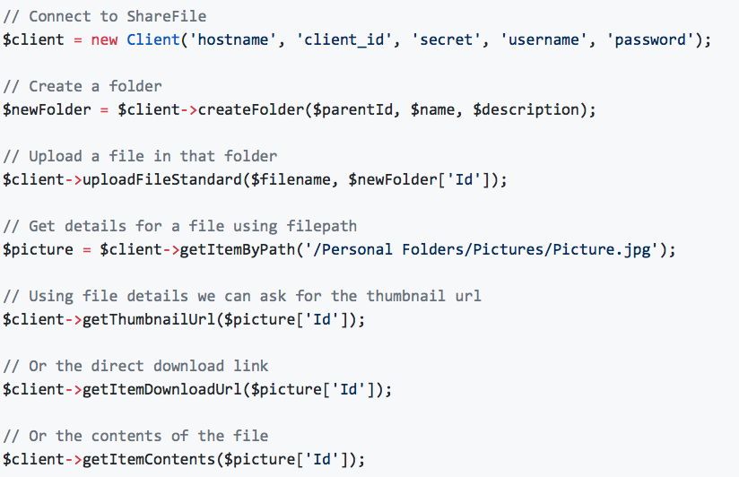

Welcome!
I am Jan Willem Kaper.
Software engineer from Amersfoort.
Web development
For a long time I was a desktop-only developer. I knew some HTML and basic JavaScript, but that was it. The last years I am more focused on web-development. I learned to use PHP and was introduced to Laravel. Later I got to know JavaScript better and learned to use Vue.JS.
Now, I am a web developer and I like it!
Document automation
Back in 2000 I was an intern at a small firm. They asked to create a database for storing their technical documents. It was a first step in a world that keeps me busy till today.
I have created several software products to help customers to automate their document workflow cycle. Starting with the creation of documents in Microsoft Office, followed by intelligent tagging, storing, and printing documents.
Open source development
In 2015 I started contributing open source projects. It's a good way to use my existing knowledge and skills by helping others and learn new skills. My open-source contributions can be found on my GitHub profile. Fun fact: this site is also open source so others can use as a template for their own site.
kapersoft/sharefile-api
This is a package created for the PHP-ecosystem. I developed it so other developers can integrate ShareFile into their product. With this package you can up-/download, move, copy, delete files and folders in ShareFile
kapersoft/flysystem
This package contains a FlySystem adapter implementation for my kapersoft/sharefile-api package.
Social life
In my free time I volunteer at my local Scouting group, visit festival and like to hang out in a bar of pub.
Scouting leader
Every saturday I am a Cub Scout Leader at my local Scouting group. I teach children in the age from 7 to 11 the Scouting Way inspired by Robert Baden-Powell. My Scouting group is member of the Dutch National Scouting organisation (Scouting Nederland) and is open for everyone irrespective of belief, race, skin colour, handicap, political context, sexual preference, or age.
My music
My taste of music can be found at my Spotify or Last.FM account.